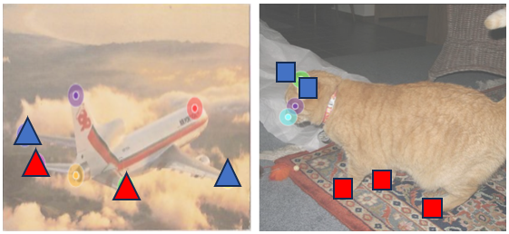
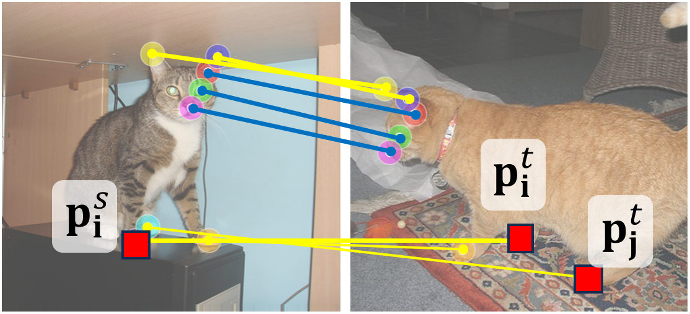
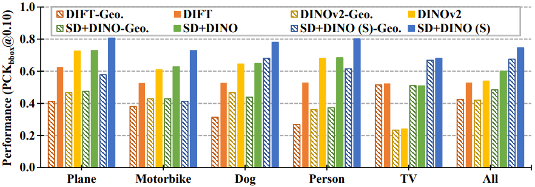
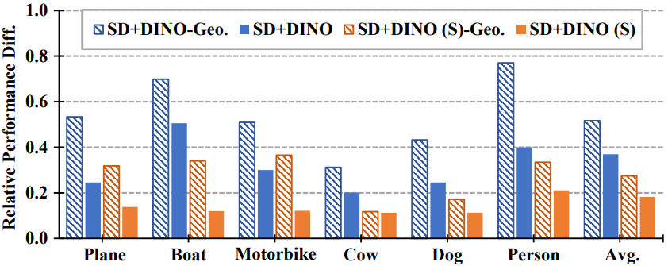
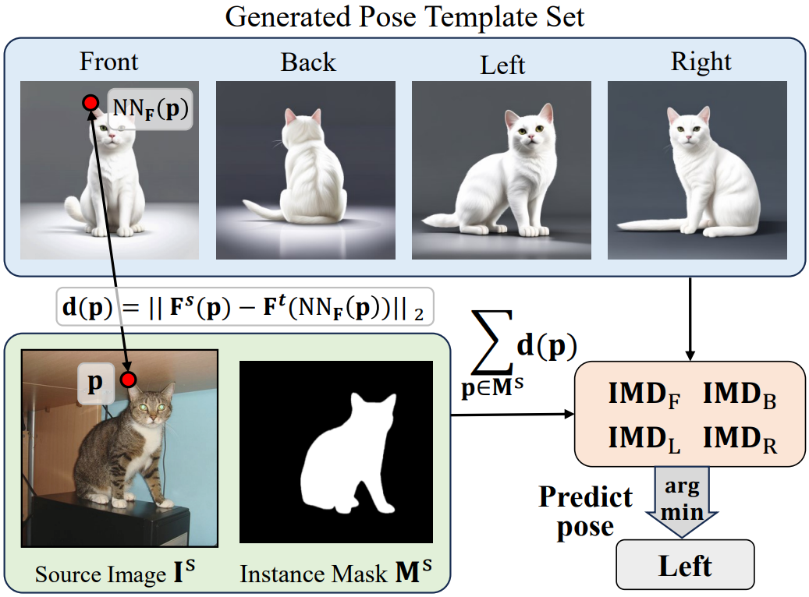
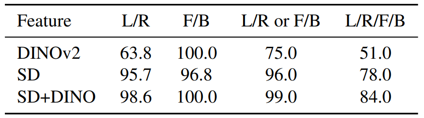
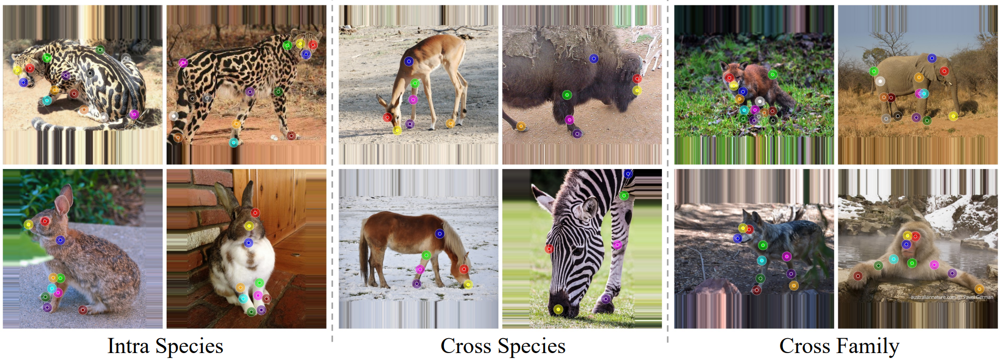

Abstract
While pre-trained large-scale vision models have shown significant promise for semantic correspondence, their features often struggle to grasp the geometry and orientation of instances.
This paper identifies the importance of being geometry-aware for semantic correspondence and reveals a limitation of the features of current foundation models under simple post-processing.
We show that incorporating this information can markedly enhance semantic correspondence performance with simple but effective solutions in both zero-shot and supervised settings.
We also construct a new challenging benchmark for semantic correspondence built from an existing animal pose estimation dataset, for both pre-training validating models. Our method achieves a PCK@0.10 score of 64.2 (zero-shot) and 85.6 (supervised) on the challenging SPair-71k dataset, outperforming the state-of-the-art by 4.3p and 11.0p absolute gains, respectively.
Our code and datasets will be publicly available.
Geometric Awareness of SD/DINO Features
We show how these features perform at matching keypoints with geometric ambiguity by constructing a geometry-aware semantic correspondence subset.

(a) Semantically-similar keypoint subgroups in images.

(b) Annotations of geo-aware semantic correspondence (yellow).
To construct a geometry-aware semantic correspondence subset, we first cluster keypoints into semantically-similar subgroups, e.g., the four paws and two ears of the cat, as shown in Fig. (a).
Then, we define a keypoint pair as a geometry-aware semantic correspondence if there are other keypoints in the same subgroup that are visible in the target image, e.g., the different paws of the cat, as shown in Fig. (b).
These cases are especially challenging for existing methods, as they require a proper understanding of the geometry to establish correct matches rather than matching to the semantically-similar keypoint(s).

(c) Per-category performance on geo-aware set.

(d) Sensitivity to pose variation (higher value = more sensitivity).
In Fig. (c), we show the per-category evaluation of state-of-the-art methods
on SPair-71k geometry-aware subset (Geo.) and standard set. While the geometry-aware subset accounts for 60% of the total
matching keypoints, we observe a substantial performance gap between the two sets for all the methods.
In Fig. (d), we further evaluate how the performance on geometry-aware subset is sensitive to pose variation of the pair images.
The y-axis displays the normalized difference between the best and worst performances among 5 different azimuth-variation subsets.
As it can be observed, the geometry-aware subset is more sensitive to the pose variation than the standard set across categories and methods,
indicating that the pose variation particularly affects the performance on geometry-aware semantic correspondence.

(e) Rough pose prediction with feature distance.

(f) Zero-shot rough pose prediction result with instance matching distance (IDM).
We manually annotated 100 cat images from SPair-71k with rough pose labels {left, right, front, and back}
and report the accuracy of predicting left or right (L/R),
front or back (F/B), either of the two cases (L/R or F/B), and one of
the four directions (L/R/F/B).
We further analyze if deep features are aware of high-level pose (or viewpoint) information of an instance in an image.
In Fig. (e), we show how we explore this pose awareness by a template-matching approach in the feature space.
The performance shown in Fig. (f) suggests that the deep features are indeed aware of the global pose information.
Please refer to the paper for more details.
Benchmarking AP-10K Dataset for Semantic Correspondence
To facilitate validating and training, we construct a new, large-scale, and challenging semantic correspondence benchmark built from an existing animal pose estimation dataset, AP-10K.

(a) Sample image pairs from AP-10K semantic correspondence benchmark.
AP-10K is an in-the-wild animal pose estimation dataset consisting of 10,015 images across 23 families and 54 species.
After manually filtering and processing, we construct a benchmark with 261k training, 17k validation, and 36k testing image pairs.
The validation and testing image pairs span three settings: the main intra-species set, the cross-species set, and the cross-family set.
It is 5 times larger than the largest existing benchmark, SPair-71k, and the first benchmark to evaluate cross-class semantic correspondence.
Please refer to Supp. for more details.
Acknowledgements:
We borrow this template from SD+DINO, which is originally from DreamBooth.